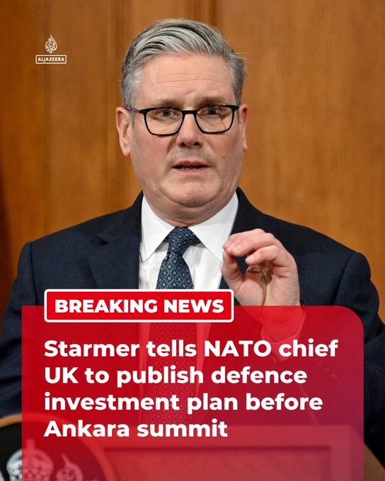

@AJENews
📝 原文: BREAKING: UK PM Keir Starmer told NATO Secretary General Mark Rutte that the UK will publish its defence investment plan ahead of the alliance's upcoming summit in Ankara, reports Reuters.More onhttp://aljazeera.com
🇨🇳 译文: 突发新闻：据路透社报道，英国首相凯尔·斯塔默告诉北约秘书长马克·吕特，英国将在北约即将于安卡拉举行的峰会之前公布其国防投资计划。更多信息请访问 http://aljazeera.com


🕒 2026-06-13T15:00:11+00:00